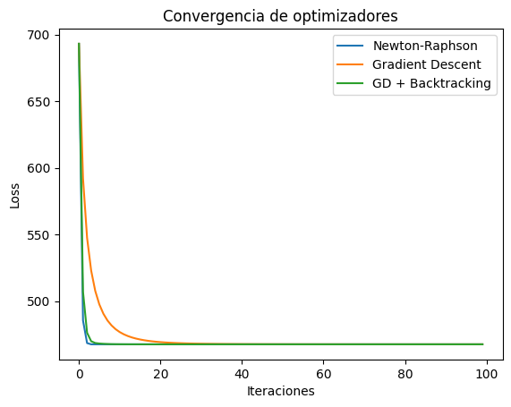
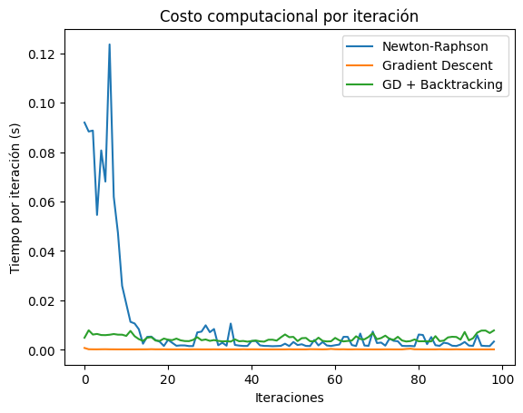
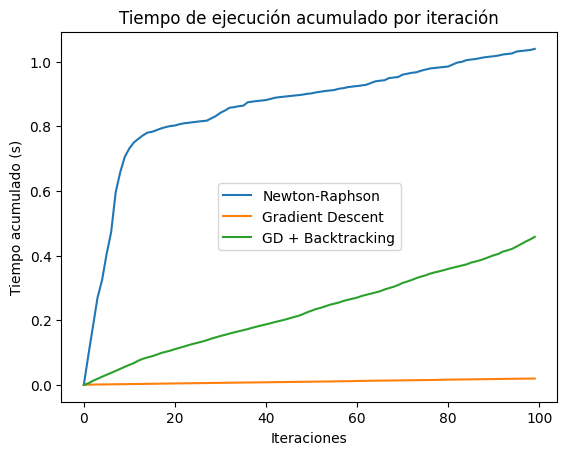
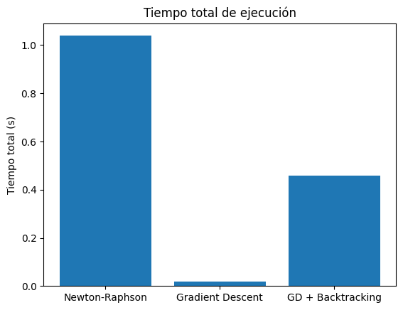

Regresión logística sin caja negra: estadística, optimización y algoritmos
¿Qué haremos hoy?
En este post vamos a desarmar la regresión logística y entender qué ocurre realmente detrás de la “caja negra” cuando entrenamos un modelo de clasificación binaria. El objetivo no es usar librerías, sino comprender el proceso completo desde primeros principios.
Partiremos desde la PMF de la distribución Bernoulli y construiremos paso a paso la función de verosimilitud, su versión logarítmica y la función de pérdida. A partir de ahí, derivaremos analíticamente el gradiente y el Hessiano que permiten entrenar el modelo mediante métodos de optimización.
Una vez formulado el problema de optimización, analizaremos y compararemos distintos métodos iterativos como Gradient Descent, Gradient Descent con Backtracking y Newton-Raphson, tanto desde un punto de vista algorítmico como práctico.
Finalmente, presentaremos una demo reproducible donde se compara el comportamiento de estos métodos en términos de convergencia, número de iteraciones y costo computacional, utilizando el conjunto de datos German Credit Data, que contiene información sobre créditos otorgados a clientes, incluyendo características y si el crédito fue aprobado o no.
Aunque el foco estará en la regresión logística, mostraremos cómo este modelo puede entenderse como un caso particular de los Modelos Lineales Generalizados (GLM), sentando las bases para extender este razonamiento a otros modelos probabilísticos.
El siguiente diagrama resume el recorrido completo desde la formulación estadística de la regresión logística hasta los algoritmos de optimización utilizados para entrenarla, destacando explícitamente qué información utiliza cada método.

Un poco de contexto teórico
Antes de entrar en derivaciones y algoritmos, es importante sentar las bases conceptuales que nos permitirán entender qué es realmente la regresión logística y por qué su entrenamiento se reduce a un problema de optimización bien definido.
Clasificación binaria y probabilidad
En un problema de clasificación binaria, la variable respuesta puede tomar únicamente dos valores, típicamente representados como 0 y 1. Desde un punto de vista probabilístico, esto se modela naturalmente mediante una distribución Bernoulli.
En lugar de predecir directamente una etiqueta, el modelo estima la probabilidad, y toma una decisión a partir de ella. $$P(Y = 1 \mid x)$$
Ejemplo: Predecir si un cliente abandonará un servicio (sí / no) en función de sus características.
La regresión logística como modelo probabilístico
La regresión logística no es simplemente una función sigmoide aplicada a los datos. Es un modelo probabilístico donde la probabilidad de éxito se expresa como una función del predictor lineal:
$$\eta = x^\top \beta, \quad p = \sigma(\eta)$$
Donde \(\eta\) es el predictor lineal, \(\beta\) son los coeficientes del modelo, y \(\sigma(\cdot)\) es la función sigmoide que mapea cualquier valor real al intervalo (0, 1).
Esta formulación permite conectar directamente la estadística (distribución Bernoulli) con la optimización, ya que todos los parámetros del modelo aparecen únicamente a través de \(\eta\).
Regresión logística como un caso de GLM
Desde una perspectiva más general, la regresión logística puede entenderse como un caso particular de los Modelos Lineales Generalizados (GLM).
- Distribución: Bernoulli
- Predictor lineal: \(\eta = X\beta\)
- Función de enlace: logit
Este marco unifica la regresión logística con otros modelos ampliamente utilizados, como la regresión de Poisson o la regresión Gamma, aunque en este artículo nos enfocaremos exclusivamente en el caso Bernoulli.
De la estadística a la optimización
Una vez definida la distribución del modelo, el siguiente paso consiste en estimar los parámetros \(\beta\). Esto se realiza mediante el principio de máxima verosimilitud.
Para facilitar el análisis y la implementación, se trabaja con la log-verosimilitud y, de forma equivalente, con la función de pérdida, que se obtiene como su negativo.
A partir de esta función de pérdida es posible derivar analíticamente el gradiente y el Hessiano, lo que permite entrenar el modelo utilizando distintos métodos de optimización iterativos.
Descenso del gradiente
El descenso del gradiente es un método iterativo de optimización que ajusta los parámetros del modelo moviéndose en la dirección opuesta al gradiente de la función de pérdida.
La idea central es simple: en cada iteración se calcula la pendiente local de la función y se da un pequeño paso en la dirección que más reduce su valor.
Para comprender completamente cómo funciona este método, es necesario introducir su principal hiperparámetro: el tamaño del paso o learning rate.
El learning rate controla qué tan grande es el desplazamiento que se realiza en cada iteración. Si el paso es demasiado grande, el algoritmo puede divergir; si es demasiado pequeño, la convergencia será muy lenta.
En otras palabras, el learning rate determina el equilibrio entre velocidad de convergencia y estabilidad del algoritmo.
Descenso del gradiente con Backtracking
El descenso del gradiente con backtracking es una extensión del método clásico que busca seleccionar automáticamente un tamaño de paso adecuado en cada iteración.
En lugar de fijar el learning rate de antemano, este método lo ajusta dinámicamente evaluando si el nuevo punto produce una reducción suficiente de la función de pérdida.
Este proceso se basa en una condición conocida como la condición de Armijo, que garantiza que cada paso contribuya de manera efectiva al proceso de optimización.
El backtracking introduce un pequeño costo computacional adicional, ya que puede requerir varias evaluaciones de la función de pérdida por iteración.
Sin embargo, a cambio se obtiene un algoritmo más estable y menos sensible a la elección manual de hiperparámetros.
Newton-Raphson
El método de Newton-Raphson es un algoritmo de optimización de segundo orden que utiliza información adicional sobre la curvatura de la función de pérdida.
Además del gradiente, este método emplea el Hessiano, una matriz de segundas derivadas que describe cómo cambia la pendiente de la función en distintas direcciones.
En cada iteración, Newton–Raphson calcula un desplazamiento resolviendo un sistema de ecuaciones lineales, lo que permite aproximar directamente el punto óptimo local.
Gracias a esta información adicional, el método suele converger en menos iteraciones que los métodos de primer orden.
No obstante, este beneficio viene acompañado de un mayor costo computacional y de memoria, especialmente cuando el número de parámetros del modelo es grande.
Enfoque analítico
En esta sección, desglosaremos paso a paso las derivaciones matemáticas que sustentan la regresión logística. Comenzaremos desde la función de masa de probabilidad (PMF) de la distribución Bernoulli y avanzaremos hasta obtener las expresiones del gradiente y el Hessiano necesarias para los métodos de optimización.
Función de masa de probabilidad (PMF)
La función de masa de probabilidad (PMF) de una variable aleatoria \(Y\) que sigue una distribución Bernoulli está dada por:
La distribución Bernoulli puede verse como un caso particular de la distribución Binomial cuando se considera una única realización (\(n = 1\)) [1].
$$P(Y = y) = p^y (1 - p)^{1 - y}, \quad y \in \{0, 1\}$$
Función de verosimilitud
La función de verosimilitud mide qué tan bien un valor del parámetro del modelo explica los datos observados. En este enfoque, los datos se consideran fijos y el parámetro es la cantidad que se ajusta.
Partiendo de la función de masa de probabilidad de la distribución Bernoulli y asumiendo observaciones independientes, la verosimilitud se obtiene como el producto de las probabilidades asociadas a cada observación.
Nota: La independencia de las observaciones es una suposición clave que simplifica el cálculo de la verosimilitud al permitir expresar la probabilidad conjunta como el producto de probabilidades individuales.
Entonces, obtenemos la función de verosimilitud multiplicando las PMF de cada observación con parámetro \(p\).
$$ \text{Si } Y_1, \ldots, Y_n \sim \text{Bernoulli}(p) $$ $$ L(\beta) = \prod_{i=1}^{n} p_i^{y_i}(1-p_i)^{1-y_i}, \qquad p_i = \sigma(\eta_i) = \frac{1}{1+e^{-\eta_i}}, \qquad \eta_i = x_i^\top \beta $$
Función de log-verosimilitud
En la práctica, rara vez trabajamos directamente con la función de verosimilitud. Al tratarse de un producto de muchas probabilidades, su valor puede volverse extremadamente pequeño a medida que aumenta el número de observaciones, lo que dificulta su interpretación y cálculo numérico.
Para evitar este problema, es común trabajar con la log-verosimilitud. Al aplicar el logaritmo, el producto de probabilidades se transforma en una suma, lo que simplifica los cálculos y hace más estable el proceso de optimización, sin alterar el valor del parámetro que maximiza la función.
$$ \ell(\beta) = \log L(\beta) = \sum_{i=1}^{n}\left[ y_i\log(p_i) + (1-y_i)\log(1-p_i) \right] $$
Función de pérdida
A partir de la log-verosimilitud podriamos realizar los siguientes calculos. Sin embargo, se suele trabajar con la función de pérdida, que es simplemente el negativo de la log-verosimilitud.
El por qué de esto radica en que muchos algoritmos de optimización están formulados para minimizar una función de pérdida en lugar de maximizar una función de verosimilitud. Sí, solo eso!
Minimizar la función de pérdida es equivalente a maximizar la log-verosimilitud, por lo que ambos enfoques conducen a los mismos parámetros óptimos.
Ejemplo: Imagina que debes elegir la mejor de dos opciones. A la primera le damos una puntuación de 10 y a la segunda una puntuación de 2. Si nuestro objetivo es maximizar la puntuación, elegimos claramente la primera opción. Ahora pensemos el problema al revés. En lugar de trabajar con una puntuación, definimos un “error” que es simplemente el negativo de esa puntuación. La primera opción tendrá un error de -10 y la segunda un error de -2. Si nuestro objetivo es minimizar el error, volvemos a elegir la primera opción.
Así, la función de pérdida para la regresión logística se expresa como:
$$ \mathcal{L}(\beta) = -\ell(\beta) \qquad\Rightarrow\qquad \mathcal{L}(\beta) = -\sum_{i=1}^{n}\left[ y_i\log(p_i) + (1-y_i)\log(1-p_i) \right] $$
Gradiente de la función de pérdida
Una vez que hemos definido la función de pérdida, el siguiente paso es encontrar los valores del parámetro que la hacen lo más pequeña posible. Para ello, necesitamos saber en qué dirección debemos movernos para reducir el error.
El gradiente cumple exactamente ese rol: indica la dirección en la que la función de pérdida crece más rápido. Si queremos minimizar la pérdida, simplemente nos movemos en la dirección opuesta.
Una forma intuitiva de pensarlo es imaginar una pendiente. El gradiente nos dice hacia dónde está la subida más empinada; si queremos bajar, caminamos en sentido contrario.
Para cálcular la gradiente de manera analítica, realizamos la derivada parcial de la función de pérdida con respecto a los parámetros \(\beta\).
$$ \frac{\partial \mathcal{L}(\beta)}{\partial \beta} = -\sum_{i=1}^{n} \frac{\partial}{\partial \beta} \left[ y_i\log(p_i) + (1-y_i)\log(1-p_i) \right] $$ $$ = -\sum_{i=1}^{n}\left[ y_i\frac{\partial}{\partial \beta}\log(p_i) + (1-y_i)\frac{\partial}{\partial \beta}\log(1-p_i) \right] \tag{1} $$
Ahora, nos enfocamos en derivar cada uno de los términos dentro de la suma en (1).
Recordando que la derivada del logaritmo es: $$ \frac{d}{dx}\log(f(x)) = \frac{1}{f(x)}\frac{df(x)}{dx} $$ Podemos aplicar esta regla a cada término en (1). $$ \frac{\partial \log(p_i)}{\partial \beta} = \frac{1}{p_i}\frac{\partial p_i}{\partial \beta} \tag{2} $$ $$ \frac{\partial \log(1-p_i)}{\partial \beta} = \frac{1}{1-p_i}\frac{\partial(1-p_i)}{\partial \beta} = \frac{1}{1-p_i}\left(-\frac{\partial p_i}{\partial \beta}\right) = -\frac{1}{1-p_i}\frac{\partial p_i}{\partial \beta} \tag{3} $$
Sustituyendo (2) y (3) en (1), obtenemos: $$ \frac{\partial \mathcal{L}(\beta)}{\partial \beta} = -\sum_{i=1}^{n}\left[ y_i\left(\frac{1}{p_i}\frac{\partial p_i}{\partial \beta}\right) + (1-y_i)\left(-\frac{1}{1-p_i}\frac{\partial p_i}{\partial \beta}\right) \right] $$ $$ = -\sum_{i=1}^{n}\left[ \left(\frac{y_i}{p_i}-\frac{1-y_i}{1-p_i}\right)\frac{\partial p_i}{\partial \beta} \right] \tag{4} $$
Ahora, necesitamos calcular \( \partial p_i / \partial \beta \). Recordando que \( p_i = \sigma(\eta_i) \) y \( \eta_i = x_i^\top \beta \), aplicamos la regla de la cadena: $$ \frac{\partial p_i}{\partial \beta} = \frac{\partial p_i}{\partial \eta_i} \frac{\partial \eta_i}{\partial \beta} \tag{5} $$
Derivemos primero el último término de (5) porque es un poco más sencillo: $$ \frac{\partial \eta_i}{\partial \beta} = \frac{\partial}{\partial \beta}(x_i^\top \beta) = x_i \tag{6} $$
Ahora derivemos el primer término de (5) recordando que: $$ p_i = \sigma(\eta_i) = \frac{1}{1+e^{-\eta_i}} = \left( 1 + e^{-\eta_i} \right)^{-1} $$
Además, observamos que: $$ 1 - p_i = 1 - \frac{1}{1 + e^{-\eta_i}} = \frac{e^{-\eta_i}}{1 + e^{-\eta_i}} \tag{7} $$
Entonces derivando \( p_i \) con respecto a \( \eta_i \): $$ \frac{\partial p_i}{\partial \eta_i} = \frac{\partial}{\partial \eta_i} \left( 1 + e^{-\eta_i} \right)^{-1} = -\left(1 + e^{-\eta_i}\right)^{-2} \cdot \left(-e^{-\eta_i}\right) = \frac{e^{-\eta_i}}{\left(1 + e^{-\eta_i}\right)^2} $$ $$ = \frac{1}{1 + e^{-\eta_i}} \cdot \frac{e^{-\eta_i}}{1 + e^{-\eta_i}} $$
Utilizando (7), podemos reescribir esto como: $$ \frac{\partial p_i}{\partial \eta_i} = p_i (1 - p_i) \tag{8} $$
Finalmente, sustituyendo (6) y (8) en (5), obtenemos: $$ \frac{\partial p_i}{\partial \beta} = p_i (1 - p_i) x_i \tag{9} $$
Sustituyendo (9) en (4), tenemos: $$ \frac{\partial \mathcal{L}(\beta)}{\partial \beta} = -\sum_{i=1}^{n}\left[ \left(\frac{y_i}{p_i}-\frac{1-y_i}{1-p_i}\right) p_i (1 - p_i) x_i \right] $$ $$ = -\sum_{i=1}^{n}\left[ (y_i(1 - p_i) - (1 - y_i)p_i) x_i \right] $$ $$ = -\sum_{i=1}^{n}\left[ (y_i - p_i) x_i \right] $$
Por lo tanto, la expresión final del gradiente de la función de pérdida en su forma matricial es: $$ \nabla \mathcal{L}(\beta) = -X^\top (y - p) = X^\top (p - y) $$
Hessiano de la función de pérdida
Mientras que el gradiente nos indica la dirección en la que la función de pérdida cambia más rápidamente, el Hessiano nos proporciona información de segundo orden sobre la curvatura de la función.
En términos geométricos, el Hessiano describe cómo cambia el gradiente a medida que nos movemos en el espacio de parámetros. Esto nos permite entender si la función es más o menos pronunciada, o si presenta zonas planas o altamente curvas.
Siguiendo la analogía de la pendiente, si el gradiente nos dice hacia dónde subir, el Hessiano nos dice qué tan empinada es esa subida y cómo varía la inclinación en cada dirección.
Esta información adicional es clave en métodos de optimización de segundo orden como el método de Newton-Raphson, donde el Hessiano se utiliza para ajustar el tamaño y la dirección del paso de actualización de forma más precisa que solamente utilizando la gradiente.
Para calcular el Hessiano, derivamos nuevamente el gradiente con respecto a los parámetros \( \beta \). $$ H(\beta) = \frac{\partial^2 \mathcal{L}(\beta)}{\partial \beta \partial \beta^\top} = \frac{\partial}{\partial \beta} \left(X^\top (p - y)\right) $$ $$ = X^\top \frac{\partial (p - y)}{\partial \beta} $$ $$ = X^\top \frac{\partial p}{\partial \beta} \tag{10} $$ Usando la expresión obtenida previamente para \( \partial p_i / \partial \beta \) en (9), podemos escribir: $$ \frac{\partial p}{\partial \beta} = D X $$ donde \( D \) es una matriz diagonal con elementos \( p_i (1 - p_i) \) en la diagonal. $$ D = \text{diag}(p_1(1 - p_1), p_2(1 - p_2), \ldots, p_n(1 - p_n)) $$ Reemplazando esto en (10), obtenemos la expresión final del Hessiano: $$ H(\beta) = X^\top D X $$
Newton Raphson
Como mencionamos anteriormente, el método de Newton-Raphson es un algoritmo de optimización de segundo orden que utiliza tanto el gradiente como el Hessiano para encontrar los parámetros que minimizan la función de pérdida.
Para entender de dónde surge la actualización de Newton-Raphson, partimos de una idea fundamental del análisis matemático, el cual aproxima una función complicada por un polinomio simple en un entorno local, en efecto, una expansión de Taylor [2].
Entonces, partimos de la expansión de Taylor de la función de pérdida alrededor del punto actual \( \beta^{(t)} \): $$ \mathcal{L}(\beta) \approx \mathcal{L}(\beta^{(t)}) + \nabla \mathcal{L}(\beta^{(t)})^\top (\beta - \beta^{(t)}) + \frac{1}{2} (\beta - \beta^{(t)})^\top H(\beta^{(t)}) (\beta - \beta^{(t)}) $$
Para abreviar la expresión hagamos los siguientes reemplazos: $$ g^{(t)} = \nabla \mathcal{L}(\beta^{(t)}), \quad H^{(t)} = H(\beta^{(t)}), \quad d = \beta - \beta^{(t)} $$ Entonces, la aproximación de Taylor se puede reescribir como: $$ \mathcal{L}(\beta) \approx \mathcal{L}(\beta^{(t)}) + g^{(t)\top} d + \frac{1}{2} d^\top H^{(t)} d $$
Derivando ambos lados con respecto a \( \beta \): $$ \nabla_\beta \mathcal{L}(\beta) \approx \nabla_\beta \left[ \mathcal{L}(\beta^{(t)}) + g^{(t)\top} d + \frac{1}{2} d^\top H^{(t)} d \right] $$ $$ \approx \nabla_\beta \mathcal{L}(\beta^{(t)}) + \nabla_\beta \left( g^{(t)\top} d \right) + \nabla_\beta \left( \frac{1}{2} d^\top H^{(t)} d \right) \tag{11} $$
Ahora, derivemos cada uno de los términos en (11). El primer término es cero porque \( \mathcal{L}(\beta^{(t)}) \) es una constante con respecto a \( \beta \): $$ \nabla_\beta \mathcal{L}(\beta^{(t)}) = 0 \tag{12} $$
El segundo término se deriva como: $$ \nabla_\beta \left( g^{(t)\top} d \right) = \nabla_\beta \left( g^{(t)\top} (\beta - \beta^{(t)}) \right) = g^{(t)} \tag{13} $$
Finalmente, el tercer término no tiene una derivada tan directa, pero veamos cómo se calcula. Recordemos que \( d \in \mathbb{R}^p \) y \( H^{(t)} \in \mathbb{R}^{p \times p} \). El término cuadrático puede escribirse explícitamente como: $$ d^\top H^{(t)} d = \sum_{i=1}^p \sum_{j=1}^p d_i \, H^{(t)}_{ij} \, d_j $$
Derivando este término con respecto a la componente \( d_k \): $$ \frac{\partial}{\partial d_k} \left( \sum_{i=1}^p \sum_{j=1}^p d_i \, H^{(t)}_{ij} \, d_j \right) = \sum_{i=1}^p \sum_{j=1}^p \frac{\partial}{\partial d_k} \left( d_i \, H^{(t)}_{ij} \, d_j \right) \tag{14} $$
Para calcular estas derivadas, observamos que las componentes de \( d \) son independientes entre sí. En particular, se cumple que: $$ \frac{\partial d_i}{\partial d_k} = \begin{cases} 1, & i = k, \\ 0, & i \neq k, \end{cases} \qquad \frac{\partial d_j}{\partial d_k} = \begin{cases} 1, & j = k, \\ 0, & j \neq k, \end{cases} $$
Esto se puede expresar de forma compacta usando el delta de Kronecker \( \delta_{ik} \) y \( \delta_{jk} \) [2]. Así, la derivada de cada término es: $$ \frac{\partial}{\partial d_k} \left( d_i \, H^{(t)}_{ij} \, d_j \right) = \delta_{ik} H^{(t)}_{ij} d_j + d_i H^{(t)}_{ij} \delta_{jk} $$
Reemplazando esto en (14), obtenemos: $$ \frac{\partial}{\partial d_k} \left( d^\top H^{(t)} d \right) = \sum_{i=1}^p \sum_{j=1}^p \left( \delta_{ik} H^{(t)}_{ij} d_j + d_i H^{(t)}_{ij} \delta_{jk} \right) $$ $$ = \sum_{i=1}^p \sum_{j=1}^p \delta_{ik} H^{(t)}_{ij} d_j + \sum_{i=1}^p \sum_{j=1}^p d_i H^{(t)}_{ik} \delta_{jk} $$ $$ = \sum_{j=1}^p H^{(t)}_{kj} d_j + \sum_{i=1}^p d_i H^{(t)}_{ik} $$ $$ = \left(H^{(t)} d\right)_k + \left(H^{(t)\top} d\right)_k $$
Dado que el Hessiano es simétrico (\( H^{(t)} = H^{(t)\top} \)) por definición, podemos simplificar la expresión a: $$ \frac{\partial}{\partial d_k} \left( d^\top H^{(t)} d \right) = \left(H^{(t)} d\right)_k + \left(H^{(t)\top} d\right)_k = \left(H^{(t)} + H^{(t)\top} \right)_k d = 2 \left(H^{(t)} d\right)_k \tag{15} $$
Reemplazando (15) en el tercer término de (11), tenemos: $$ \nabla_\beta \left( \frac{1}{2} d^\top H^{(t)} d \right) = \frac{1}{2} \cdot 2 H^{(t)} d = H^{(t)} d \tag{16} $$
Finalmente, combinando (12), (13) y (16) en (11), obtenemos: $$ \nabla_\beta \mathcal{L}(\beta) \approx 0 + g^{(t)} + H^{(t)} d \approx g^{(t)} + H^{(t)} d $$
Retornando a los términos originales, tenemos: $$ \nabla_\beta \mathcal{L}(\beta) \approx \nabla \mathcal{L}(\beta^{(t)}) + H(\beta^{(t)}) (\beta - \beta^{(t)}) $$
Para encontrar el mínimo de la función de pérdida, establecemos el gradiente igual a cero y resolvemos para \( \beta \): $$ 0 = \nabla \mathcal{L}(\beta^{(t)}) + H(\beta^{(t)}) (\beta - \beta^{(t)}) $$ $$ \Rightarrow \quad H(\beta^{(t)}) (\beta - \beta^{(t)}) = -\nabla \mathcal{L}(\beta^{(t)}) $$ $$ \Rightarrow \quad \beta - \beta^{(t)} = -H(\beta^{(t)})^{-1} \nabla \mathcal{L}(\beta^{(t)}) $$ $$ \Rightarrow \quad \beta = \beta^{(t)} - H(\beta^{(t)})^{-1} \nabla \mathcal{L}(\beta^{(t)}) $$
Por lo tanto, la regla de actualización de Newton-Raphson es: $$ \beta^{(t+1)} = \beta^{(t)} - H(\beta^{(t)})^{-1} \nabla \mathcal{L}(\beta^{(t)}) $$
Descenso de Gradiente
Como contraparte al método de Newton-Raphson, el descenso de gradiente es un algoritmo de optimización de primer orden, ya que utiliza únicamente información del gradiente para actualizar los parámetros, evitando el cálculo del Hessiano de la función de pérdida.
Para entender de dónde surge la regla de actualización del descenso de gradiente, partimos nuevamente de una idea fundamental del análisis matemático, es decir, la aproximación local de una función mediante una expansión de Taylor[2]. En este caso, consideramos únicamente los términos de primer orden.
Para ver con claridad cómo el polinomio de Taylor conduce a una aproximación de la derivada, partimos de la expansión de segundo orden de una función diferenciable alrededor del punto \( x \): $$ f(x+h) = f(x) + f'(x)\,h + \frac{f''(x)}{2}\,h^2 $$ $$ f(x+h) - f(x) = f'(x)\,h + \frac{f''(x)}{2}\,h^2 $$ $$ f'(x)\,h = f(x+h) - f(x) - \frac{f''(x)}{2}\,h^2 $$ $$ f'(x) = \frac{f(x+h) - f(x)}{h} - \frac{f''(x)}{2}\,h $$
Luego de hacer algunas cuentas sobre el polinomio de Taylor, llegamos a una expresión en la que el último término es proporcional a \( h \), por lo que representa un error de orden \( \mathcal{O}(h) \). Es decir, cuando \( h \) es suficientemente pequeño, este término se vuelve despreciable y se obtiene la aproximación: $$ f'(x) \approx \frac{f(x+h) - f(x)}{h} \quad \Rightarrow \quad f(x+h) \approx f(x) + f'(x)\,h \tag{17} $$
Si ahora extrapolamos la idea de (17) al caso multivariado, consideremos la función de pérdida \( \mathcal{L}(\beta) \) y un desplazamiento pequeño \( \Delta = \beta - \beta^{(t)} \). Usando una expansión de Taylor de primer orden alrededor del punto actual \( \beta^{(t)} \), se obtiene: $$ \mathcal{L}(\beta^{(t)} + \Delta) \approx \mathcal{L}(\beta^{(t)}) + \nabla \mathcal{L}(\beta^{(t)})^\top \Delta \quad \Rightarrow \quad \mathcal{L}(\beta^{(t)} + \Delta) - \mathcal{L}(\beta) \approx \nabla \mathcal{L}(\beta^{(t)})^\top \Delta \tag{18} $$
Dado que estamos trabajando con la función de pérdida, nuestro objetivo es minimizar su valor. Es decir, buscamos que se cumpla que el siguiente paso reduzca el valor de la función de pérdida: $$ \mathcal{L}(\beta^{(t)} + \Delta) \lt \mathcal{L}(\beta^{(t)}) \tag{19} $$
Teniendo en cuenta la inecuación de (19) se genera la siguiente condición desde (18): $$ \nabla \mathcal{L}(\beta^{(t)})^\top \Delta \lt 0 $$
En particular, podemos tomar a la dirección opuesta al gradiente como una elección natural para \( \Delta \), pues como se sabe, el gradiente apunta en la dirección de máximo crecimiento de la función, ya que: $$ \nabla \mathcal{L}(\beta^{(t)})^\top (-\nabla \mathcal{L}(\beta^{(t)})) = -\lVert \nabla \mathcal{L}(\beta^{(t)}) \rVert_2^2 \lt 0 $$
Por lo tanto, definimos el desplazamiento como: $$ \Delta = - \alpha \nabla \mathcal{L}(\beta^{(t)}), \quad \alpha \gt 0 \tag{20} $$ Donde \( \alpha \) es un parámetro positivo conocido como tasa de aprendizaje o step size.
De esta forma, utilizando (20) en (18) podemos definir la regla para el cálculo del valor de la función de pérdida en el nuevo punto: $$ \mathcal{L}(\beta^{(t)} + \Delta) \approx \mathcal{L}(\beta^{(t)}) - \alpha \lVert \nabla \mathcal{L}(\beta^{(t)}) \rVert_2^2 \tag{21} $$
Por otro lado, sabemos que el nuevo punto se calcula como: $$ \beta^{(t+1)} = \beta^{(t)} + \Delta $$
\( \Delta \) es la diferencia entre un nuevo punto y el punto actual en el espacio de parámetros, pero su valor exacto ya lo hemos definido en (20).
Es decir, obtenemos la regla iterativa del descenso de gradiente es: $$ \beta^{(t+1)} = \beta^{(t)} - \alpha \nabla \mathcal{L}(\beta^{(t)}) $$
Descenso de Gradiente con Backtracking
En la derivación anterior del descenso de gradiente hemos asumido la existencia de un tamaño de paso \( \alpha > 0 \) fijo. Sin embargo, en la práctica, la elección de este parámetro resulta crítica, ya que valores demasiado grandes pueden provocar divergencia del algoritmo, mientras que valores demasiado pequeños pueden ralentizar considerablemente la convergencia.
Para abordar este problema, se introduce el método de backtracking line search, el cual nos ayuda a seleccionar de manera adaptativa un tamaño de paso adecuado que garantice una disminución suficiente del valor de la función de pérdida en cada iteración.
Recordando que obtuvimos la función de pérdida alrededor del punto actual \( \beta^{(t)} \) al resolver la aproximación de Taylor de primer orden, la cual se expresa según (21) como: $$ \mathcal{L}(\beta^{(t)} + \Delta) \approx \mathcal{L}(\beta^{(t)}) - \alpha \lVert \nabla \mathcal{L}(\beta^{(t)}) \rVert_2^2 $$
Backtracking line search con la condición de Armijo busca asegurar que el valor real de la función de pérdida en el nuevo punto \( \beta^{(t)} + \Delta \) sea menor que el valor predicho por la aproximación lineal [3], es decir, que se cumpla: $$ \mathcal{L}(\beta^{(t)} + \Delta) \le \mathcal{L}(\beta^{(t)}) - c \alpha \lVert \nabla \mathcal{L}(\beta^{(t)}) \rVert_2^2, \quad 0 \lt c \lt 1 $$
Donde \( c \) es un parámetro pequeño que controla la suficiencia de la disminución. Si la condición no se cumple, se reduce el tamaño del paso \( \alpha \) multiplicándolo por un factor \( \omega \) (con \( 0 \lt \omega \lt 1 \)) y se vuelve a evaluar la condición hasta que se satisfaga.
Dicho en otras palabras, Armijo exige que la función de pérdida disminuya al menos en una fracción \( c \) del valor predicho por la aproximación lineal, asegurando así una reducción significativa en cada paso. En dado caso de no cumplirse, se genera un nuevo tamaño de paso más pequeño \(\alpha_{n+1}\) , cuyo valor es el resultado de multiplicar el actual \(\alpha_n\) por \(\omega\).
En resumen, el descenso de gradiente con backtracking line search usando la condición de Armijo nos ayuda a asegurar una convergencia más robusta y eficiente, para ello adiciona dos parámetros adicionales \( c \) y \( \omega \) que regulan la suficiencia de la disminución y el ajuste del tamaño del paso, respectivamente
Referencias
- Casella, G., & Berger, R. L. (2002). Statistical Inference (2nd ed.). Duxbury Press. Sección de distribuciones discretas. [PDF]
- Lages Lima, E. (2013). Análisis Real (Volumen 1). IMCA Instituto de Matemática y Ciencias Afines. Traducido por Rodrigo Vargas. [PDF]
- Beck, A. (2014). Introduction to Nonlinear Optimization: Theory, Algorithms, and Applications with MATLAB. MOS-SIAM Series on Optimization. [PDF]
Algoritmos de optimización
En esta sección mostraremos los algoritmos en pseudocódigo para cada uno de los métodos de optimización.
Newton-Raphson
Entrada:
- Parámetros iniciales: β^(0)
- Tolerancia de convergencia: ε
- Máximo de iteraciones: max_iter
Salida:
- Parámetros estimados: β^(*)
Algoritmo:
1. Establecer t = 0
2. Repetir hasta la convergencia o t >= max_iter:
a. Calcular gradiente: g^(t) = ∇L(β^(t))
b. Calcular Hessiano: H^(t) = H(β^(t))
c. Actualizar parámetros:
delta = (H^(t))^(-1) * g^(t)
β^(t+1) = β^(t) - delta
d. Verificar convergencia:
Si ||β^(t+1) - β^(t)|| < ε, entonces salir
e. Incrementar t: t = t + 1
3. Retornar β^(*) = β^(t)Descenso de Gradiente
Entrada:
- Parámetros iniciales: β^(0)
- Tasa de aprendizaje: α
- Tolerancia de convergencia: ε
- Máximo de iteraciones: max_iter
Salida:
- Parámetros estimados: β^(*)
Algoritmo:
1. Establecer t = 0
2. Repetir hasta la convergencia o t >= max_iter:
a. Calcular gradiente: g^(t) = ∇L(β^(t))
b. Actualizar parámetros:
β^(t+1) = β^(t) - α * g^(t)
c. Verificar convergencia:
Si ||β^(t+1) - β^(t)|| < ε, entonces salir
d. Incrementar t: t = t + 1
3. Retornar β^(*) = β^(t)Descenso de Gradiente con Backtracking
Entrada:
- Parámetros iniciales: β^(0)
- Tasa de aprendizaje inicial: α_0
- Parámetro de disminución suficiente: c (0 < c < 1)
- Factor de reducción del tamaño del paso: ω (0 < ω < 1)
- Tolerancia de convergencia: ε
- Máximo de iteraciones: max_iter
Salida:
- Parámetros estimados: β^(*)
Algoritmo:
1. Establecer t = 0
2. Repetir hasta la convergencia o t >= max_iter:
a. Calcular gradiente: g^(t) = ∇L(β^(t))
b. Establecer α = α_0
c. Mientras L(β^(t) - α * g^(t)) > L(β^(t)) - c * α * ||g^(t)||^2:
α = ω * α
d. Actualizar parámetros:
β^(t+1) = β^(t) - α * g^(t)
e. Verificar convergencia:
Si ||β^(t+1) - β^(t)|| < ε, entonces salir
f. Incrementar t:
t = t + 1
3. Retornar β^(*) = β^(t)Implementación en Python
A continuación, se presenta una implementación práctica de los algoritmos de optimización discutidos anteriormente utilizando Python. Utilizaremos bibliotecas populares como NumPy para las operaciones numéricas y Matplotlib para la visualización de resultados.
A fin de no expandir demasiado este artículo, el código de la implementación completa está disponible desde Google Colab en el siguiente enlace: Implementación de Algoritmos de Optimización en Python
Comparación de complejidad
En esta sección se presenta una comparación entre los métodos de optimización implementados desde el punto de vista del costo computacional. Primero, se analiza la complejidad temporal a partir del comportamiento observado durante la ejecución del notebook. Posteriormente, se abordará la complejidad espacial mediante un análisis teórico.
Complejidad temporal
La figura siguiente presenta una comparación empírica de los métodos de optimización analizados, combinando la evolución de la función de pérdida con distintas métricas de costo computacional. En conjunto, estas visualizaciones permiten evaluar no solo la velocidad de convergencia, sino también la complejidad temporal efectiva de cada método.




En la subfigura (a) se observa que el método de Newton–Raphson alcanza un valor estable de la función de pérdida en un número reducido de iteraciones, lo que refleja su rápida convergencia local. Sin embargo, esta métrica por sí sola no captura el costo computacional real del método.
Por otro lado, la subfigura (b) muestra que el costo computacional por iteración de Newton–Raphson es considerablemente mayor que el de los métodos basados en gradiente, debido al cálculo del Hessiano y la resolución de un sistema lineal en cada paso. Este comportamiento se refleja de forma acumulativa en la subfigura (c), donde el tiempo de ejecución total crece más rápidamente para Newton–Raphson, a pesar de requerir menos iteraciones.
Finalmente, la subfigura (d) resume el tiempo total de ejecución hasta alcanzar la convergencia, evidenciando que, en este experimento, los métodos basados en gradiente ofrecen un mejor compromiso entre estabilidad y costo computacional, especialmente cuando se consideran escenarios de mayor escala.
En conclusión, aunque el método de Newton-Raphson converge rápidamente en términos de iteraciones, su alto costo computacional por iteración lo hace menos eficiente en la práctica en comparación con los métodos de descenso de gradiente, especialmente en problemas de gran escala.
Complejidad espacial
Desde el punto de vista teórico, la complejidad espacial de cada método de optimización puede analizarse en función de las estructuras de datos que deben almacenarse durante la ejecución del algoritmo.
En el caso del método de Newton-Raphson, es necesario almacenar el Hessiano de la función de pérdida, que es una matriz de tamaño \( p \times p \), donde \( p \) es el número de parámetros del modelo. Esto implica una complejidad espacial de \( \mathcal{O}(p^2) \). Además, se deben almacenar el gradiente y los parámetros, lo que añade una complejidad adicional de \( \mathcal{O}(p) \). Por lo tanto, la complejidad espacial total del método de Newton-Raphson es: $$ \mathcal{O}(p^2) + \mathcal{O}(p) = \mathcal{O}(p^2) $$
En contraste, los métodos de descenso de gradiente y descenso de gradiente con backtracking solo requieren almacenar el gradiente y los parámetros, ambos de tamaño \( p \). Por lo tanto, la complejidad espacial de estos métodos es: $$ \mathcal{O}(p) + \mathcal{O}(p) = \mathcal{O}(p) $$
En resumen, desde el punto de vista de la complejidad espacial, los métodos basados en gradiente son más eficientes que el método de Newton-Raphson, especialmente cuando el número de parámetros \( p \) es grande.
Demo
Explicar el comportamiento de los algoritmos es fundamental, pero observar cómo estos se traducen en una decisión concreta permite cerrar el vínculo entre teoría y práctica. Por ello, se presenta a continuación una demo basada en un conjunto de datos real, donde un modelo de regresión logística previamente entrenado realiza inferencia sobre una nueva muestra.
El objetivo de esta demo no es evaluar el desempeño predictivo del modelo, sino ilustrar cómo los parámetros obtenidos mediante distintos métodos de optimización se utilizan para calcular el valor lineal η = xTβ, transformarlo en una probabilidad mediante la función sigmoide y, finalmente, producir una decisión binaria.
Para este ejemplo se emplea el German Credit Dataset (UCI) únicamente como vehículo práctico. A partir de las características de una nueva observación, se aplica el mismo proceso de estandarización usado durante el entrenamiento y se evalúa la probabilidad asociada a la clase positiva, evidenciando que la inferencia es computacionalmente sencilla en comparación con el proceso de optimización que permitió estimar los parámetros del modelo.
Debido a que explicarlo esta bien, pero mostrarlo es mejor, he creado una demo interactiva donde puedes subir una foto y el modelo entrenado te dirá la edad y género estimados. Puedes probarla a continuación:
La muestra es generada al dar clic corresponde a una observación aleatoria del German Credit Dataset, ya que en total se requieren 24 características de la persona..
Muestra de entrada
Selecciona una muestra aleatoria del conjunto de datos y observa cómo el modelo realiza la inferencia utilizando los parámetros optimizados por cada método.
Clase real (1 = Riesgo alto de crédito, 0 = Buen pagador)
y = --
Características de la persona
Resultado de inferencia
Newton–Raphson
Combinación lineal
η = --
Probabilidad estimada
p = --
Decisión binaria
Predicción: --
Gradient Descent
Combinación lineal
η = --
Probabilidad estimada
p = --
Decisión binaria
Predicción: --
Gradient Descent (Backtracking)
Combinación lineal
η = --
Probabilidad estimada
p = --
Decisión binaria
Predicción: --
Umbral de decisión (τ)
τ = 0.50
Si p ≥ τ, la observación se clasifica como Riesgo alto de crédito.
Este control ajusta qué tan estricto es el modelo.
A la izquierda: el modelo es más permisivo y detecta más casos de riesgo.
A la derecha: el modelo es más estricto y solo señala riesgo cuando está muy seguro.
Cierre
En este artículo hemos recorrido de forma integral el proceso de formulación, análisis y resolución de un problema de optimización aplicado al contexto de Aprendizaje de Máquina, poniendo énfasis en los fundamentos matemáticos y algorítmicos que subyacen a métodos ampliamente utilizados en la práctica.
A lo largo del desarrollo comparamos distintos métodos iterativos de optimización, como Gradient Descent, Gradient Descent con Backtracking y Newton-Raphson, analizando sus diferencias no solo desde el punto de vista computacional, sino también desde su interpretación estadística y su impacto en la convergencia hacia una misma función objetivo.
Uno de los objetivos centrales fue evitar el tratamiento de estos algoritmos como una caja negra, mostrando explícitamente cómo surgen la función de pérdida, la gradiente y el Hessiano, y cómo estas cantidades guían el proceso de optimización. Este enfoque permite comprender por qué distintos métodos pueden producir trayectorias diferentes durante el entrenamiento, aun cuando todos convergen al mismo óptimo.
La demo interactiva que acompaña este artículo permite visualizar este comportamiento de forma intuitiva, destacando que el umbral de decisión es una elección realizada en inferencia y no forma parte del proceso de entrenamiento. Esto refuerza la separación conceptual entre el aprendizaje del modelo y su uso práctico en escenarios reales.
Si te interesa profundizar en temas como Optimización Numérica, Estadística Computacional, Machine Learning y Deep Learning desde una perspectiva clara y fundamentada, te invito a conectar por LinkedIn y seguir las próximas publicaciones y proyectos de este portafolio. En futuras entregas exploraremos cómo estos algoritmos se integran en pipelines reales y entornos cloud, combinando teoría, implementación y despliegue.
¡Gracias por leer y feliz aprendizaje algorítmico!